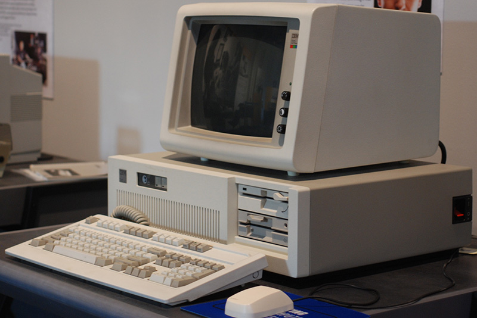

Header Section |
|
side Bar |
ComputerUntil the 1980s, there were very few computers in the workplace. Organisations that had computer systems ran them on giant mainframe computers that were housed in specialist rooms with reinforced floors and industrial cooling systems. This all changed in 1981 when IBM, a company known previously for its mainframes, launched its first personal computer. As with many new developments, there was much debate as to whether personal computers would be successful. The IBM desktop computer shown below cost around £4,500 when it was launched in 1984. It had a single-core CPU with a maximum speed of 25MHz. |